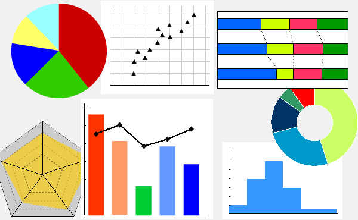

<!doctype html>
<html>
	<head>
		<meta charset="utf-8">
		<meta name="viewport" content="width=device-width, initial-scale=1.0, maximum-scale=1.0, user-scalable=no">

		<title>Introduction Neo4j</title>

		<link rel="stylesheet" href="css/reveal.css">
		<link rel="stylesheet" href="css/theme/black.css">

		<!-- Theme used for syntax highlighting of code -->
		<link rel="stylesheet" href="lib/css/zenburn.css">
		<script src="https://cdn.rawgit.com/knsv/mermaid/0.5.1/dist/mermaid.min.js"></script>
		<script>mermaid.initialize({startOnLoad:true});</script>
		<style>
			.reveal .slides  {
				text-align: left;
			}
			.reveal h1,
			.reveal h2,
			.reveal h3,
			.reveal h4,
			.reveal h5,
			.reveal h6 {
				text-transform: none;
			}
			.reveal h2 {
				font-size:120%;
			}
			.reveal strong{
				color:yellow;

			}
		</style>
		<!-- Printing and PDF exports -->
		<script>
			var link = document.createElement( 'link' );
			link.rel = 'stylesheet';
			link.type = 'text/css';
			link.href = window.location.search.match( /print-pdf/gi ) ? 'css/print/pdf.css' : 'css/print/paper.css';
			document.getElementsByTagName( 'head' )[0].appendChild( link );
		</script>
	</head>
	<body>
		<div class="reveal">
			<div class="slides">
		      <section data-markdown=""
            data-separator="^\n---$"
            data-separator-vertical="^\n>>>$">
        <script type="text/template">

Neo4jを触ってみた
----------------------------------

@koduki

---

## 自己紹介
- - -

</img>
- [@koduki](https://twitter.com/koduki)
- 天神あたりで働くScalaやJavaが好きなエンジニア
- でもRubyの方がもーっと好きです

---

## Neo4jってなに？
- - -

- Javaで実装されたグラフDB
- Derbyのように組み込みでもサーバモードでも使える

---

## グラフDBってなに？
- - -

- RDBではない何か。NoSQLの一種
- リレーションが第一級市民
- グラフを直観的に扱える

---

## これはグラフですか？
- - -

- いいえ、チャートです

</img>

---

## 改めてグラフ
- - -

- グラフ理論のグラフ
- ノードとエッジからなる数学的対象

</img>

---

## 何ができるの？
- - -

- 最短経路問題(SPP)
- ソーシャルグラフの解析(friend-of-a-friend)
- レコメンデーション
- ページランク

---

## 導入
- - -

- Dockerでサクッと

```bash
$ docker run  --publish=7474:7474 --publish=7687:7687  --volume=$HOME/neo4j/data:/data neo4j
Starting Neo4j.
2016-08-25 17:37:34.951+0000 INFO  No SSL certificate found, generating a self-signed certificate..
2016-08-25 17:37:35.511+0000 INFO  Starting...
2016-08-25 17:37:36.128+0000 INFO  Bolt enabled on 0.0.0.0:7687.
2016-08-25 17:37:39.417+0000 INFO  Started.
2016-08-25 17:37:40.741+0000 INFO  Remote interface available at http://0.0.0.0:7474/
```

---

## 使い方：ノードの登録
- - - 

```
CREATE 
(nanoha_san:Person { name: "なのは", 所属: "スターズ" }), 
(fate:Person { name: "フェイト", 所属: "ライトニング" }),
(vivio:Person { name: "ヴィヴィオ", 所属: "その他" }),
(hayate:Person { name: "はやて", 所属: "ロングアーチ" })
RETURN nanoha_san, fate, vivio, hayate;
```

---

## 使い方：リレーションの登録1
- - - 

```
MATCH (ｘ: Person), (ｙ: Person)
WHERE ｘ.name = "ヴィヴィオ" AND ｙ.name = "なのは"
CREATE (ｘ)-[r:ママ]->(ｙ)
RETURN r;
```

---

## 使い方：リレーションの登録2
- - - 

```
MATCH (ｘ: Person), (ｙ: Person)
WHERE ｘ.name = "ヴィヴィオ" AND ｙ.name = "フェイト"
CREATE (ｘ)-[r:ママ]->(ｙ)
RETURN r;
```

---

## 使い方：リレーションの登録3
- - - 

```
MATCH (ｘ: Person), (ｙ: Person)
WHERE ｘ.name = "なのは" AND ｙ.name = "はやて"
CREATE (ｘ)-[r:友人]->(ｙ)
RETURN r;
```

---

## 使い方：全検索
- - - 

```
MATCH (n) RETURN n;
```

---

## 使い方：ママの友人を検索
- - - 

```
MATCH (vivio: Person { name: "ヴィヴィオ" })-[p:ママ]->(ママ:Person)-[f:友人]->(ママの友達:Person)
RETURN vivio, f, ママの友達
```

---

## Javaでの利用
- - - 

```java
import org.neo4j.driver.v1.*;

Driver driver = GraphDatabase.driver( "bolt://localhost", AuthTokens.basic( "neo4j", "neo4j" ) );
Session session = driver.session();

session.run( "CREATE (a:Person {name:'Arthur', title:'King'})" );

StatementResult result = session.run( "MATCH (a:Person) WHERE a.name = 'Arthur' RETURN a.name AS name, a.title AS title" );
while (result.hasNext()){
    Record record = result.next();
    System.out.println( record.get( "title" ).asString() + " " + record.get("name").asString() );
}

session.close();
driver.close();
```

---

## まとめ
- - -

- グラフDBはRDBとは違ったことが簡単にできそう
- 個人的にはジョブ分析とかにも結構使える感触がある
- 性能は未知数
    　
	　</script>
      </section>
			</div>
		</div>

		<script src="lib/js/head.min.js"></script>
		<script src="js/reveal.js"></script>


		<script>
			// More info https://github.com/hakimel/reveal.js#configuration
			Reveal.initialize({
				history: true,

				// More info https://github.com/hakimel/reveal.js#dependencies
				dependencies: [
					{ src: 'plugin/markdown/marked.js' },
					{ src: 'plugin/markdown/markdown.js' },
					{ src: 'plugin/notes/notes.js', async: true },
					{ src: 'plugin/highlight/highlight.js', async: true, callback: function() { hljs.initHighlightingOnLoad(); } }
				]
			});
		</script>
	</body>
</html>
